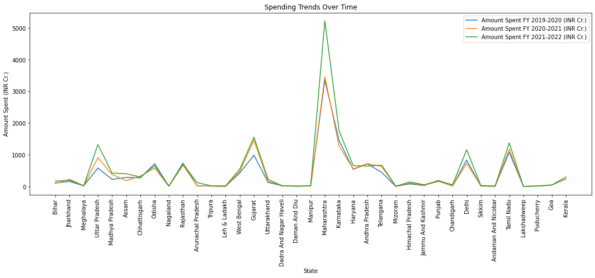

Analysis of CSR Expenditure and Demographics in India#
This notebook presents an in-depth analysis of state expenditure and demographic factors in India. The dataset used contains information about the amount spent by various Indian states during the fiscal years 2019-2020, 2020-2021, and 2021-2022, along with population and poverty rate data. The goal of this analysis is to gain valuable insights into the CSR spending patterns of different states, explore correlations between spending and demographic factors, and identify trends and growth patterns. By examining this data, we aim to provide a comprehensive understanding of how fiscal decisions and demographics interplay in India’s diverse regions.
Imports#
%%capture
pip install pandas numpy matplotlib seaborn ipywidgets scikit-learn
import pandas as pd
import numpy as np
import pandas as pd
import matplotlib.pyplot as plt
import seaborn as sns
import ipywidgets as widgets
from IPython.display import display
from ipywidgets import interactive
from sklearn.linear_model import LinearRegression
from sklearn.metrics import mean_absolute_error, mean_squared_error, r2_score
Load Data#
excel_file_path = 'StateWiseView.xlsx'
data = pd.read_excel(excel_file_path, sheet_name=0)
data.head()
---------------------------------------------------------------------------
ModuleNotFoundError Traceback (most recent call last)
File /opt/hostedtoolcache/Python/3.8.18/x64/lib/python3.8/site-packages/pandas/compat/_optional.py:142, in import_optional_dependency(name, extra, errors, min_version)
141 try:
--> 142 module = importlib.import_module(name)
143 except ImportError:
File /opt/hostedtoolcache/Python/3.8.18/x64/lib/python3.8/importlib/__init__.py:127, in import_module(name, package)
126 level += 1
--> 127 return _bootstrap._gcd_import(name[level:], package, level)
File <frozen importlib._bootstrap>:1014, in _gcd_import(name, package, level)
File <frozen importlib._bootstrap>:991, in _find_and_load(name, import_)
File <frozen importlib._bootstrap>:973, in _find_and_load_unlocked(name, import_)
ModuleNotFoundError: No module named 'openpyxl'
During handling of the above exception, another exception occurred:
ImportError Traceback (most recent call last)
Cell In[3], line 2
1 excel_file_path = 'StateWiseView.xlsx'
----> 2 data = pd.read_excel(excel_file_path, sheet_name=0)
3 data.head()
File /opt/hostedtoolcache/Python/3.8.18/x64/lib/python3.8/site-packages/pandas/io/excel/_base.py:478, in read_excel(io, sheet_name, header, names, index_col, usecols, dtype, engine, converters, true_values, false_values, skiprows, nrows, na_values, keep_default_na, na_filter, verbose, parse_dates, date_parser, date_format, thousands, decimal, comment, skipfooter, storage_options, dtype_backend)
476 if not isinstance(io, ExcelFile):
477 should_close = True
--> 478 io = ExcelFile(io, storage_options=storage_options, engine=engine)
479 elif engine and engine != io.engine:
480 raise ValueError(
481 "Engine should not be specified when passing "
482 "an ExcelFile - ExcelFile already has the engine set"
483 )
File /opt/hostedtoolcache/Python/3.8.18/x64/lib/python3.8/site-packages/pandas/io/excel/_base.py:1513, in ExcelFile.__init__(self, path_or_buffer, engine, storage_options)
1510 self.engine = engine
1511 self.storage_options = storage_options
-> 1513 self._reader = self._engines[engine](self._io, storage_options=storage_options)
File /opt/hostedtoolcache/Python/3.8.18/x64/lib/python3.8/site-packages/pandas/io/excel/_openpyxl.py:548, in OpenpyxlReader.__init__(self, filepath_or_buffer, storage_options)
533 @doc(storage_options=_shared_docs["storage_options"])
534 def __init__(
535 self,
536 filepath_or_buffer: FilePath | ReadBuffer[bytes],
537 storage_options: StorageOptions = None,
538 ) -> None:
539 """
540 Reader using openpyxl engine.
541
(...)
546 {storage_options}
547 """
--> 548 import_optional_dependency("openpyxl")
549 super().__init__(filepath_or_buffer, storage_options=storage_options)
File /opt/hostedtoolcache/Python/3.8.18/x64/lib/python3.8/site-packages/pandas/compat/_optional.py:145, in import_optional_dependency(name, extra, errors, min_version)
143 except ImportError:
144 if errors == "raise":
--> 145 raise ImportError(msg)
146 return None
148 # Handle submodules: if we have submodule, grab parent module from sys.modules
ImportError: Missing optional dependency 'openpyxl'. Use pip or conda to install openpyxl.
# Descriptive Statistics
# Calculate basic statistics for numeric columns
desc_stats = data.describe()
desc_stats
| Amount Spent FY 2019-2020 (INR Cr.) | Amount Spent FY 2020-2021 (INR Cr.) | Amount Spent FY 2021-2022 (INR Cr.) | population | Poverty rate | |
|---|---|---|---|---|---|
| count | 37.000000 | 37.000000 | 37.000000 | 3.700000e+01 | 37.000000 |
| mean | 372.121081 | 398.517838 | 511.121351 | 3.864976e+07 | 10.454865 |
| std | 623.060198 | 652.685574 | 932.869180 | 5.022521e+07 | 8.361965 |
| min | 0.000000 | 0.000000 | 0.450000 | 6.600100e+04 | 0.550000 |
| 25% | 14.210000 | 12.430000 | 15.910000 | 1.646050e+06 | 4.750000 |
| 50% | 124.700000 | 158.460000 | 177.480000 | 1.930110e+07 | 8.100000 |
| 75% | 537.910000 | 578.160000 | 652.010000 | 6.959976e+07 | 15.310000 |
| max | 3353.240000 | 3464.810000 | 5229.310000 | 2.315026e+08 | 33.760000 |
Exploratory Data Analysis#
# Comparative Analysis - Spending patterns over the years
# Create a line plot to visualize spending trends for each state over time
plt.figure(figsize=(18, 6))
for col in data.columns[1:4]: # Columns with spending data
sns.lineplot(data=data, x='State', y=col, label=col)
plt.title('Spending Trends Over Time')
plt.xlabel('State')
plt.ylabel('Amount Spent (INR Cr.)')
plt.xticks(rotation=90)
plt.legend()
plt.show()

# Calculate the correlation between Population and Spending (FY 2021-2022)
population_spending_corr = data['population'].corr(data['Amount Spent FY 2021-2022 (INR Cr.)'])
# Calculate the correlation between Poverty Rate and Spending (FY 2021-2022)
poverty_rate_spending_corr = data['Poverty rate'].corr(data['Amount Spent FY 2021-2022 (INR Cr.)'])
print(f"Correlation between Population and Spending (FY 2021-2022): {population_spending_corr:.2f}")
print(f"Correlation between Poverty Rate and Spending (FY 2021-2022): {poverty_rate_spending_corr:.2f}")
Correlation between Population and Spending (FY 2021-2022): 0.56
Correlation between Poverty Rate and Spending (FY 2021-2022): -0.03
# Create a widget to select the year
year_selector = widgets.Dropdown(
options=['2019-2020', '2020-2021', '2021-2022'],
value='2021-2022',
description='Select Year:',
)
# Function to update and display the linear regression chart
def update_chart(selected_year):
# Extract CSR spending and population for the selected year
csr_spending = data[f'Amount Spent FY {selected_year} (INR Cr.)']
population = data['Poverty rate']
# Reshape the data for Linear Regression
csr_spending = csr_spending.values.reshape(-1, 1)
population = population.values.reshape(-1, 1)
# Create a Linear Regression model
model = LinearRegression()
model.fit(population, csr_spending)
# Make predictions using the model
predictions = model.predict(population)
# Create a scatter plot of the data points
plt.figure(figsize=(20, 6))
plt.scatter(population, csr_spending, color='blue', label='Data Points')
# Plot the regression line
plt.plot(population, predictions, color='red', linewidth=2, label='Linear Regression')
# Customize the plot
plt.title(f'Linear Regression: CSR Spending vs. Poverty rate ({selected_year})')
plt.xlabel('Poverty rate')
plt.ylabel(f'CSR Spending {selected_year} (INR Cr.)')
plt.legend()
plt.grid(True)
# Show the plot
plt.show()
# Create an interactive widget that updates the chart
interactive_plot = interactive(update_chart, selected_year=year_selector)
# Display the interactive widget
display(interactive_plot)
# Create a widget to select the year
year_selector = widgets.Dropdown(
options=['2019-2020', '2020-2021', '2021-2022'],
value='2021-2022',
description='Select Year:',
)
# Function to update and display the linear regression chart
def update_chart(selected_year):
# Extract CSR spending and population for the selected year
csr_spending = data[f'Amount Spent FY {selected_year} (INR Cr.)']
population = data['population']
# Reshape the data for Linear Regression
csr_spending = csr_spending.values.reshape(-1, 1)
population = population.values.reshape(-1, 1)
# Create a Linear Regression model
model = LinearRegression()
model.fit(population, csr_spending)
# Make predictions using the model
predictions = model.predict(population)
# Create a scatter plot of the data points
plt.figure(figsize=(20, 6))
plt.scatter(population, csr_spending, color='blue', label='Data Points')
# Plot the regression line
plt.plot(population, predictions, color='red', linewidth=2, label='Linear Regression')
# Customize the plot
plt.title(f'Linear Regression: CSR Spending vs. Population ({selected_year})')
plt.xlabel('Population')
plt.ylabel(f'CSR Spending {selected_year} (INR Cr.)')
plt.legend()
plt.grid(True)
# Show the plot
plt.show()
# Create an interactive widget that updates the chart
interactive_plot = interactive(update_chart, selected_year=year_selector)
# Display the interactive widget
display(interactive_plot)